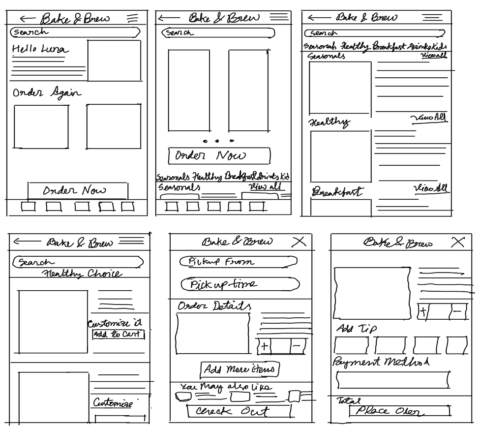
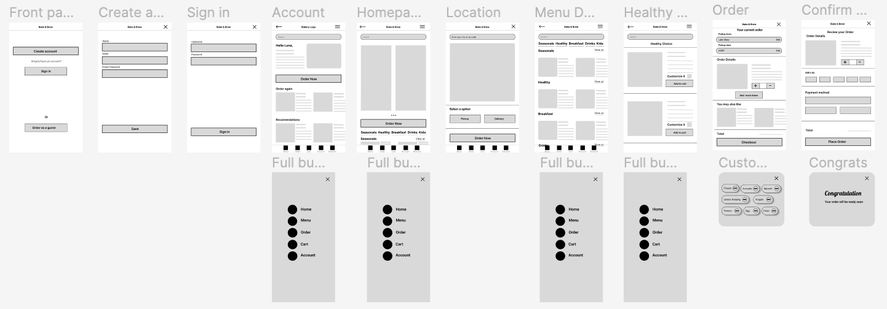
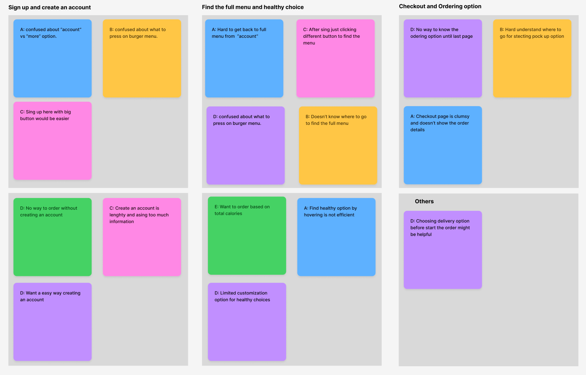
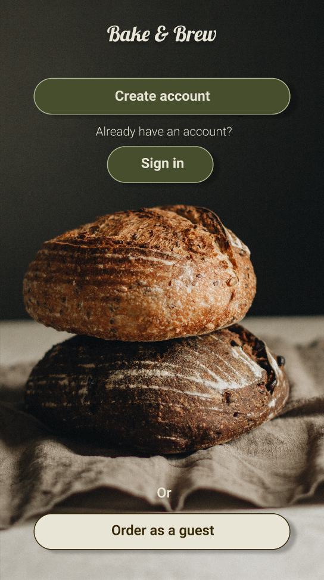
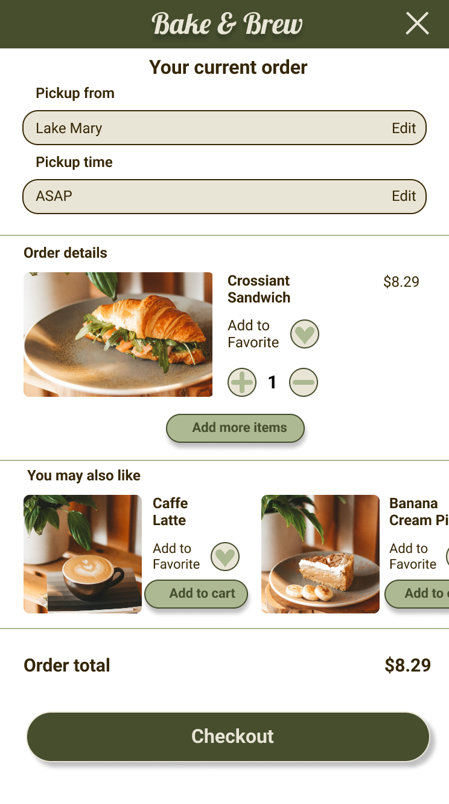
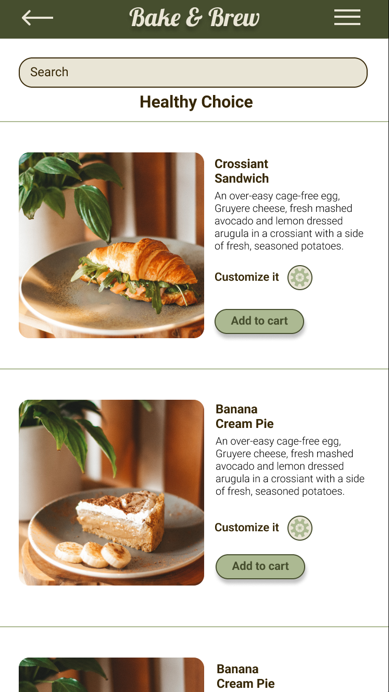
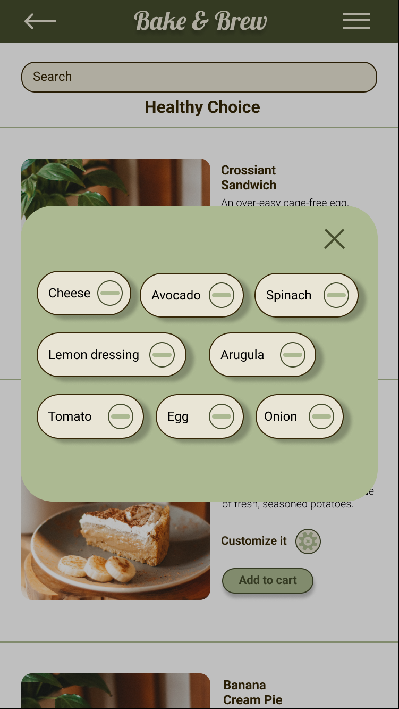
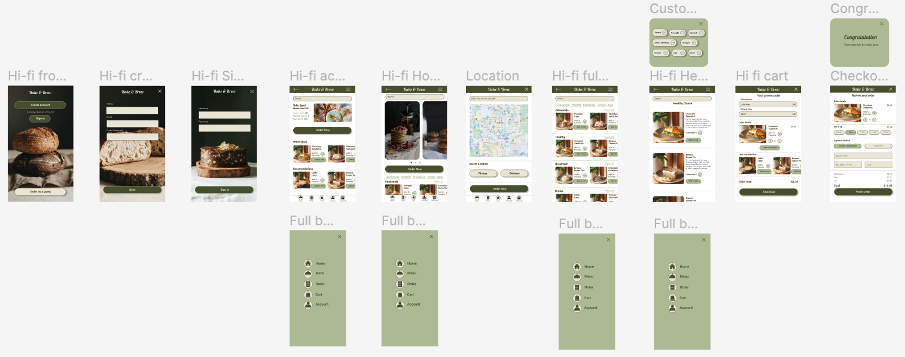
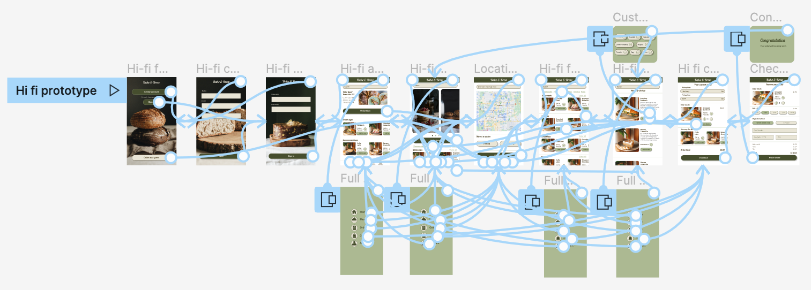

Bake & Brew
Project Context
-
Background
Bake & Brew is a shopping app for Bakery which located in the suburbs of a metropolitan area. This bakery focus to attract and retain customers to order online. It is very noticeable that they introduce a dedicated mobile apps which offers multiple deals and daily rewards including broad spectrum of healthy and delicious bakery menu. The target customers for this bakery like who are really looking for healthy bakery food with good price.
-
Healthy diet followers who have lack of the time to prepare or find a healthy meal or bakery food.
-
Goal
Design an app for Bake & Brew bakery that allows users to easily order and pick up fresh, healthy bakery food.
- See Prototype
Role
Conducting interviews, paper and digital wireframing, low and high-fidelity prototyping, conducting usability studies, accounting for accessibility, and iterating on designs.
Time
5 weeks
Tool
- Figma
- Adobe Photoshop
User Research
-
I conducted interviews and created empathy maps to understand the users I’m designing for and their needs. A primary user group identified through research was working adults who don’t have time to prepare or find healthy meals and bakery food. This user group confirmed initial assumptions about Bake & Brew customers, but research also revealed that time was not the only factor limiting users from cooking at home. Other user problems included obligations, interests, or challenges that make it difficult to find a healthy bakery in-person.
-
Problem Statement
- Luna is a busy workingadult who needs an online bakery app which has the healthy option with quick ordering process because it is always her priority to eat healthily, but at the same time, she doesn’t want to miss out anything like good desserts and bakery food.
Most of the bakery doesn’t offer healthy option like sugar-free or low-calories food.
It’s always difficult to find a dog friendly place.
Sometimes it annoys me to explain the customize order. It would be way easier if the place has the kiosk tab for a quick order.
Voices from User Interviews
Building Empathy
-
Luna is very passionate about a healthy and structured lifestyle. She really loves to explore and do new things which can make a big positive change in our society. As a yoga instructor, it is always her priority to eat healthily, but at the same time, she doesn’t want to miss out anything like good desserts and bakery food. But mostly she gets frustrated when the place has zero healthy option, a non instagrammable and dog-unfriendly environment.Goals:
- To do something great that makes our society a better place to live
- To follow a healthy lifestyle
- To find an instagrammable place with the access of good healthy food
Mapping Luna’s user journey revealed how helpful it would be for users to have access to a dedicated Bake & Brew app.
Starting the Design
-
Paper Wireframes
Taking the time to draft iterations of each screen of the app on paper ensured that the elements that made it to digital wireframes would be well-suited to address user pain points. For the home screen, I prioritized a quick and easy ordering process to help users save time.
- 
-
Digital Wireframes
As the initial design phase continued, I made sure to base screen designs on feedback and findings from the user research. Using the completed set of digital wireframes, I created a low-fidelity prototype. The primary user flow I connected was building and ordering food quickly, so the prototype could be used in a usability study.
- 
-
Affinity Diagram
At this point, I have a thorough and organized spreadsheet full of notes and observations from the testing I did on Bake & Brew Lo-fi prototype. Then I started adding those observations to digital sticky notes to make an affinity diagram.
- 
I conducted two rounds of usability studies. Findings from the first study helped guide the designs from wireframes to mockups. The second study used a high-fidelity prototype and revealed what aspects of the mockups needed refining. Here are all the findings I got from usability studies:
1
Users want an easy food ordering process.2
Users want a delivery option before start the order.3
Users want quick customization options.4
Add a “order as a guest” option help users to order quickly without creating a profile.5
The checkout process doesn't have add items option.Final Design
-
Key Mockups
The usability studies revealed that the users expressed a desire to easy signup option or ordering as a guest, also added customize it with more customize option and lastly during checkout put a button for add more items. So these are 3 key mockups:
-
- Order as a guest
- Add more items
- Customize it
-  
-  
-
High-fidelity Prototype
The final high-fidelity prototype presented cleaner user flows for ordering food and checkout. It also met user needs for a pickup or delivery option as well as more customization.
- 
- 
Reflection
-
Impact
The app makes users feel like Bake & Brew really thinks about how to meet their needs. One quote from peer feedback: “The app made it so easy to order bakery food ! I would definitely use this app as a go-to for a delicious, fast, and even healthy food.”
-
What I learned
While designing the Bake & Brew app, I learned that the first ideas for the app are only the beginning of the process. Usability studies and peer feedback influenced each iteration of the app’s designs.